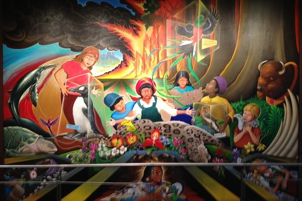

This theory is based off of Denver International Airport. There are many strange things about this airport that make it stand out compared to other airports around the globe.
Click the image to learn more about the conspiracies involving Denver International Airport
There are many theories about Denver International Airport, but this webpage will focus on, the blue horse statue called the "Blue Mustang", the New World Order and some references to Nazi Germany .
The Blue Mustang is a blue horse sculpture with glowing blood red eyes located near the airport. This really isn't a theory, since this actually happnened, but this "theory" is about the sculpture Luis Jimenez having the statue fall on him. The collision took away his life.
There are many murals on the walls of Denver Airport, which indicate some references to Nazi Germany or some believe they could be about the New World Order. This is a theory, because no internatinal public building would have random strange murals on the walls like this airport.

{kind=link}
{kind=link}